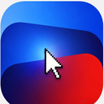
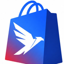
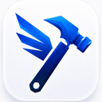

La IA ya despegó.
condorai.cl · diagnóstico gratis
Guion visual · V1 · Septiembre 2026
La nueva identidad de condor.ai. Un solo color para el cóndor, textura de pintura acrílica y láminas de acrílico para todo lo demás, y un movimiento que planea en vez de aletear. De aquí salen el sitio, el Portal Cóndor y cada producto, Medula incluida.
Mueve el cursor sobre la pintura
500 m · Esencia
El cóndor andino casi no bate las alas. Encuentra una térmica, sube y planea durante horas gastando lo mínimo. Así se tiene que sentir condor.ai: mucha altura, poco ruido y cada movimiento con una razón.
5.000
metros de perspectiva
Vemos el negocio completo antes que el detalle. Composiciones con aire, horizontes largos, cifras grandes y poco texto encima.
2
acrílicos
Pintura acrílica vertida, con venas y celdas, para dar textura. Lámina de acrílico gruesa, con canto y brillo, para sostener contenido. Nada de degradés planos.
?
antes que la respuesta
Mostramos una parte y dejamos que el resto se descubra: textos que se descifran, zonas que se revelan con el cursor, una sombra que cruza la pantalla.
1.200 m · Logo
Le quitamos los colores al cóndor y lo redibujamos en vector sobre una grilla de 275 × 248. Conserva la silueta que la gente ya reconoce; lo que cambia es que ahora funciona en cualquier tamaño, sobre cualquier fondo y con un solo color.
Tres plumas primarias escalonadas, un ala que sube a 30,7° y un vientre que baja a 36,2°. La diferencia entre los dos ángulos es lo que hace que el cóndor se vea planeando y no cayendo.
El collar blanco del cóndor andino queda como una pequeña muesca en el cuello. Es el único detalle orgánico del isotipo y no se quita.
La línea de luz que separaba ala y cuerpo en el logo anterior se convierte en la versión Corte: un tajo limpio que se usa en tamaños grandes, relieves e impresión.
Siempre un color a la vez. Los gradientes se tratan como un solo color (una tinta que cambia), nunca como tres colores planos.
1.800 m · Carga
Cuatro cargas, una por tipo de espera. Todas usan el isotipo y ninguna gira en círculos: el cóndor sube, se llena o planea.
Entrada al sitio y al portal. 2,4 s, una vez por sesión. El trazo dibuja al cóndor, la pintura lo llena y el nombre sube.
000%
Cargas con progreso real: subir archivos, generar cotizaciones y PDFs, exportar. El cóndor se llena de pintura hasta el 100 %.
4.200 m · pensando
Esperas sin duración conocida: la IA pensando, Barbara creando, un agente respondiendo. El cóndor sube y baja en la térmica y el altímetro no para.
Botones, celdas y esqueletos del portal, de 16 a 40 px. Un brillo recorre la silueta cada 1,4 s. Toca el botón para verlo en contexto.
2.400 m · Color
Ocho azules ordenados como el cielo a medida que se sube: la noche abajo, el cobalto al medio y el glaciar arriba. Toca cualquier color para copiar su código.
Siempre con un poco de azul. Un gris puro se ve sin decidir.
Solo para informar. Nunca como decoración ni como acento de marca.
Cuánto de cada cosa hay en una pantalla o pieza típica.
Pigmentos para campañas, productos y fechas. Una edición por pieza, y siempre acompañada del cobalto o la tinta.
El único gradiente de uso diario. Botones de marca, logo en gradiente, gráficos.
El rosado del altiplano al atardecer. Campañas, Barbara, fechas especiales.
Frío y técnico. Datos, dashboards, condor track.
Metal pulido. Piezas premium, tarjetas, hot stamping.
Ediciones limitadas. Guiño al rojo del logo anterior, dosificado.
3.000 m · Tipografía
Mantenemos la familia que ya usa el sitio y los PDF, y le damos reglas fijas. Clash Display habla fuerte, General Sans explica y Space Mono mide.
Aa
Semibold 600 · Titulares, cifras, wordmark · tracking −3 %
La IA ya despegó.
Aa
Regular 400 · Semibold 600 · Texto, interfaz, botones
Webs, videos y automatizaciones que ponen a tu negocio adelante.
Aa
Regular 400 · Bold 700 · Rótulos, datos, altímetros · MAYÚSCULAS +8 %
ALT 4.200 m · $1.290.000 · 30/09/2026
Altura
Portada
Titular de sección
Título de tarjeta
Bajada o párrafo destacado, hasta 60 caracteres por línea.
Texto corrido y controles del portal. Es el tamaño base: nunca menos en párrafos.
Rótulo · Capítulo · Estado
3.600 m · Textura
La pintura acrílica vertida le da a condor.ai la textura que le faltaba: venas, celdas y brillo húmedo. La lámina de acrílico es la superficie donde se apoya el contenido. Una es fondo, la otra es soporte, y no se cambian de rol.
Laboratorio de vertido
Cobalto · semilla 12,4
Fondo de portadas, escenarios, fichas de producto y redes. Se anima lento (un ciclo completo toma minutos) y reacciona al cursor como pintura fresca.
Acrílico de 6 mm: fondo translúcido, canto iluminado arriba, sombra de color abajo. Sostiene todo texto que va sobre vertido. Pasa el cursor: se inclina con la luz.
Ruido fino al 4–8 % sobre toda superficie de color. Evita que los azules se vean digitales y une foto, vertido y color plano.
Las celdas que deja la silicona en un vertido real. Se reservan para piezas de impacto: portadas de campaña, cierres de video, lanzamientos.
4.200 m · Motion
Cada animación usa una de estas cuatro curvas. Tienen nombre de vuelo para que diseño y código hablen igual: "esto entra en térmica" se entiende en Figma, en CSS y en una reunión.
cubic-bezier(.16, 1, .3, 1) · 1.200 msEntrar. Sube rápido y se asienta despacio. Aparición de secciones, modales, el logo.
cubic-bezier(.45, 0, .2, 1) · 700 msDesplazar. Continuo, sin tirones. Carruseles, scroll guiado, paneles que se deslizan.
cubic-bezier(.8, 0, .1, 1) · 320 msCambiar de lugar. Decidido y corto. Pestañas, navegación del portal, reordenar.
cubic-bezier(.34, 1.56, .64, 1) · 180 msMicro. Un rebote corto y escaso, como el cóndor que casi no aletea. Toques, interruptores, copiar.
Piezas listas para el sitio y las redes. Todas respetan "reducir movimiento" del sistema.
Texto térmico
Tu competencia ya despegó.
El titular llega cifrado y se descifra de izquierda a derecha. Pasa el cursor para repetirlo. Uso: heros, cierres de video, anuncios.
¿Qué ve un cóndor a 5.000 metros?
Lo que tu competencia todavía no ve.
El paso
Cada tanto, la sombra de un cóndor cruza la pantalla. No se anuncia ni se explica.
Cifras que ascienden
6.961m
Los números suben con la curva térmica cuando aparecen. En el portal, solo la primera vez que se ve un dato.
4.800 m · Productos
Todos los productos comparten la misma ficha acrílica: el mismo corte, el mismo brillo, el mismo canto. Cambia el pigmento del vertido y el glifo blanco. Se nombran siempre "condor + palabra", en minúscula. Medula mantiene su nombre y su marca, respaldada por condor.ai.
Sitios web y landings que convierten.
Pigmento · Cobalto
Tiendas Shopify que se operan solas.
Pigmento · Índigo
Videos y contenido hechos con IA.
Pigmento · Cielo
Campañas y métricas en tiempo real.
Pigmento · Aurora
Agentes que atienden y venden 24/7.
Pigmento · Lila
Carruseles y reels para redes, solos.
Pigmento · Rosa Puna
La memoria de tu empresa, con cerebro 3D.
Pigmento · Médula (marca propia)
Producto nuevo: elegir pigmento de la rampa o de una edición y un glifo monolínea de 24 px.
Antes



Cinco estilos distintos: 3D brillante, degradé tricolor, dibujo lineal.
V1 Acrílico
Una sola familia. Se reconocen juntas y por separado.
5.200 m · Interfaz
El sitio y el portal usan los mismos tokens. En la interfaz la textura se dosifica: el vertido aparece en la barra de marca, las fichas de producto y los estados vacíos, nunca detrás de tablas o formularios.
Botones
Campos
Estados y controles
Tarjeta de dato
Martes 30 de septiembre · datos de ejemplo
5.600 m · Aplicaciones
Redes, papelería e íconos. Todas las piezas salen de los mismos tres ingredientes: vertido, lámina y el cóndor en un color.
La IA ya despegó.
condorai.cl · diagnóstico gratis
Nuevo
condor track
Tus campañas, en vivo
¿Qué ve un cóndor a 5.000 m?
01.10 · condorai.cl
App y favicon · 180 / 32 / 16 px
6.400 m · Voz
Directo, con altura y con algo de misterio. Español de Chile, cercano, sin tecnicismos ni frases de agencia.
SíTu competencia responde en 3 segundos. ¿Y tú?
NoPotenciamos la transformación digital de tu negocio con soluciones innovadoras.
SíTe mostramos qué te está dejando atrás. Toma 2 minutos.
NoCompleta nuestro formulario de diagnóstico integral de madurez tecnológica.
SíListo. La cotización ya está en el correo de Tecnobox.
No¡Genial! 🎉 Tu cotización fue procesada exitosamente.
6.961 m · Cumbre
Los tokens viven en apps/guion-visual/tokens/condor.css. El sitio y el Portal los importan tal cual; el resto de este guion se arma con ellos.
:root {
/* marca */
--cn-cobalto: #2747FF;
--cn-tinta: #0A0F2C;
--cn-glaciar: #F2F5FC;
/* interfaz (claro · oscuro) */
--cn-fondo: #F4F6FB; /* #070A1C */
--cn-texto: #0A0F2C; /* #EEF1FF */
--cn-acento: #2747FF; /* #4A66FF */
/* vuelo */
--cn-termica: cubic-bezier(.16, 1, .3, 1);
--cn-planeo: cubic-bezier(.45, 0, .2, 1);
--cn-picada: cubic-bezier(.8, 0, .1, 1);
--cn-aleteo: cubic-bezier(.34, 1.56, .64, 1);
/* forma */
--cn-r-ficha: 28%;
--cn-display: "Clash Display";
--cn-texto-f: "General Sans";
--cn-mono: "Space Mono";
}assets/marca/40 SVG: isotipo, corte, wordmark, horizontal y vertical en cobalto, tinta, blanco y 4 gradientestokens/condor.cssColor, tipo, forma y movimiento en claro y oscuroguion.jsMotor de vertido WebGL, cargas y demos de motion para reutilizarherramientas/generar-marca.mjsnpm run marca regenera todos los SVGestilo.css por los tokens y sumar el modo oscuro